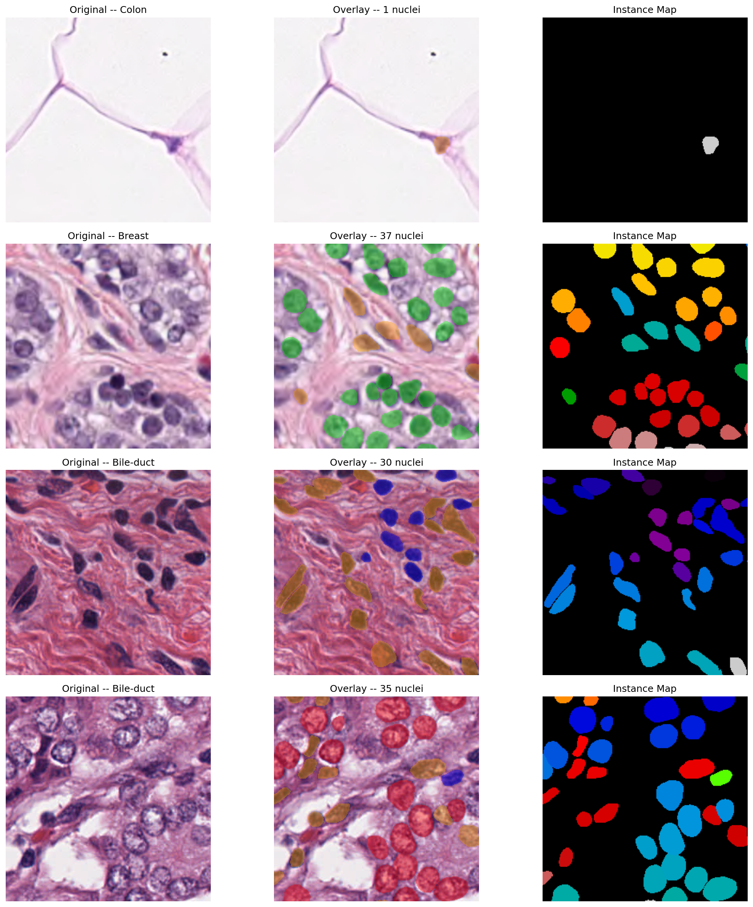
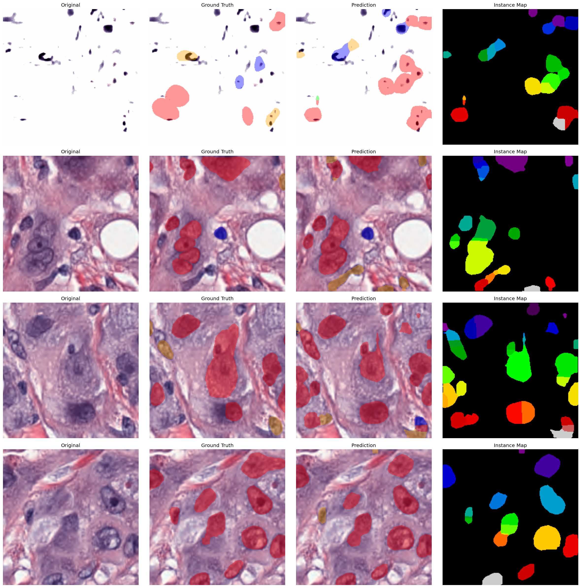

Three layers, one narrative: reproduce the paper, expose the constrained bottleneck, then show why the improved track is meaningfully better.
CellViT PanNuke baseline from the paper, used as the reference for mPQ and F1 detection.
Constrained Assignment 2 run with frozen encoder and limited budget. It is intentionally weak so the gap is visible and honest.
Unfrozen encoder, class-weighted cross entropy, AMP, and longer training to make the model better adapt to histopathology.
Key implementation facts at a glance, so the viewer doesn’t need to inspect a notebook cell to understand the experimental setup.
| Field | Paper baseline | Constrained reproduction | Improved (MoNuSeg) |
|---|---|---|---|
| Primary dataset | PanNuke (as reported) | PanNuke | MoNuSeg (cross-domain evaluation) |
| Model family | CellViT (paper) | CellViT-style hybrid CNN + Transformer | CellViT-style hybrid (same architecture) |
| Encoder | vit_base_patch16_224 (paper) | vit_base_patch16_224 | vit_base_patch16_224 (fine-tuned) |
| Patch size | 256 × 256 | 256 × 256 | 256 × 256 |
| Total parameters | 699,749,053 (SAM-H / paper logs) | 116,970,122 | 116,970,122 |
| Trainable params | 62,723,005 (paper; SAM-H trainable) | 31,125,386 (decoder-only / frozen encoder) | Full model unfrozen (end-to-end fine-tuning) |
| Batch size | 16 | 8 | 8 |
| Epochs | 130 | 10 (tight budget) | 30 + early stopping |
| Optimizer | AdamW (lr=3e-4, betas=(0.85,0.95), wd=1e-4) | AdamW | AdamW |
| Scheduler | Exponential (gamma=0.85) | Warmup + Cosine Decay | Warmup + Cosine Decay |
| Mixed precision (AMP) | Enabled | Not used (constrained) | Enabled |
| Cross-domain / notes | mPQ 48.27 / F1 82.44 (paper) | mPQ 7.32 / F1 22.86 (PanNuke) | PanNuke improved: mPQ 14.22 / F1 31.49; MoNuSeg bPQ 66.21 / F1 84.83 |
| Evaluation folds | Official PanNuke splits (fold-based; paper used 90% training splits) | 3-fold PanNuke | 3-fold PanNuke (improved) / cross-domain on MoNuSeg |
The table is the exact comparison; the chart is the fast visual story. The values are loaded from the workspace JSON and CSV artifacts.
| Track | Dataset | mPQ | F1 detection |
|---|---|---|---|
| CellViT paper baseline | PanNuke | 48.27 | 82.44 |
| Constrained reproduction | PanNuke | 7.32 | 22.86 |
| Improved reproduction | PanNuke | 14.22 | 31.49 |
| Cross-domain best | MoNuSeg | 66.21 bPQ | 84.83 |
The improved version changes the learning dynamics rather than simply making the run longer. The chart below shows the exact fold-level behavior.
A quick visual block that feels interactive even though it is fully static. It combines metric cards, sample images, and a class-wise chart.


A clean side-by-side visual of baseline, reproduced, and improved pipelines, with the improvement points highlighted directly in the flow.